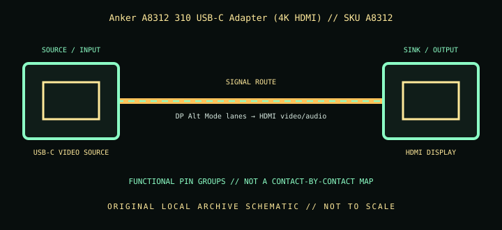

[ INDIVIDUAL COMPONENT // CABLES & ADAPTERS ]
Anker A8312 310 USB-C Adapter (4K HDMI)
A compact, unidirectional USB-C-to-HDMI adapter for supported USB-C display sources; it carries video and does not provide USB-C charging pass-through.

IDENTIFICATION: Catalog SKU: A8312. Record the complete label, regional suffix, hardware model/revision, and cable length printed on the specimen; nearby model variants are not interchangeable by assumption.
Specifications & connector revisions
| Catalog subcategory | Display cables and adapters |
|---|---|
| Manufacturer / SKU | Anker A8312 310 USB-C Adapter (4K HDMI) — A8312 |
| Connector ends / length | USB-C male source → HDMI Type-A female display socket; short attached adapter lead/body (manufacturer’s cited product page does not state a separate cable length). |
| Protocol and revision | Anker describes the A8312 as a 4K HDMI adapter; product documentation and linked standard guidance are more important than the “4K” label for the exact timing. Treat HDMI 2.0/4K 60 Hz as a capability only where the A8312 product revision and source/display support it; Anker’s current page itself states up to 4K rather than guaranteeing each refresh/chroma combination. |
| Signal path / pinout | USB-C source uses DisplayPort Alternate Mode, with lane and configuration negotiation at the Type-C interface; the adapter converts the display stream to HDMI video/audio at the Type-A receptacle. No pass-through charging port is present, and no undocumented internal contact mapping is claimed. |
| Mode and bandwidth caveats | The official page advertises resolution “up to 4K,” not universal 4K60. Check the host’s DP Alt Mode version, OS/GPU support, display EDID/input, HDMI cable length, and target refresh. The compact adapter should not bear cable strain; support both cable and host during use. |
Compatibility & direction
Requires a USB-C or compatible Thunderbolt source with video output (DP Alt Mode). Connect a separate HDMI cable to an HDMI display. Data-only USB-C hosts, reverse HDMI-to-USB-C use, and charging through this adapter are unsupported. Verify phone/tablet-specific output limits; a listed device family may have model-specific exceptions.
Handling & archival notes
Keep the stated source and sink ends in their specified direction; do not force keyed connectors or use this product as an assumed voltage/pinout substitute for a superficially similar cable. Support the tether during connection, keep contacts clean and dry, and avoid tight bends at molded strain reliefs.
For the archive, photograph both connector faces, labels, packaging SKU, length, and revision. If a mode is tested, record source model/GPU and firmware, sink model/firmware, intermediate adapters, cable run, resolution, refresh rate, chroma/HDR, and whether HDCP succeeds. Test results apply to that exact chain, not all variants.
Manufacturer and standards sources
- Anker — 310 USB-C Adapter (4K HDMI), A8312Manufacturer product page and stated compatibility list.
- VESA — DisplayPort Alt Mode over USB Type-CStandards-body explanation of host-side DisplayPort Alternate Mode and adapter requirements.
- USB-IF — USB Type-C specifications and documentsOfficial connector and USB-C technical-document index; check the host port’s video-support specification separately.
Maximum modes are source-, sink-, firmware-, signal-path-, and revision-dependent. Manufacturer documentation for the exact SKU and hardware model takes precedence over family names and connector appearance.